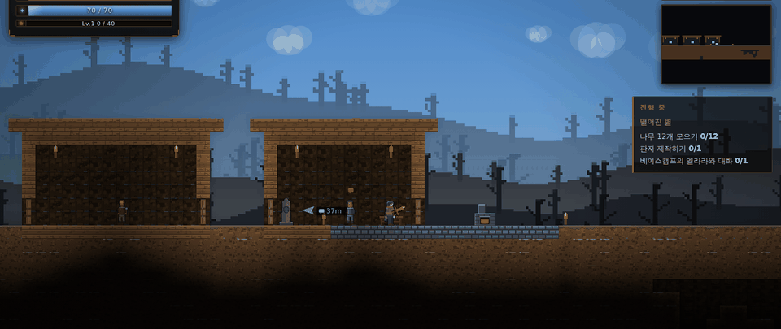
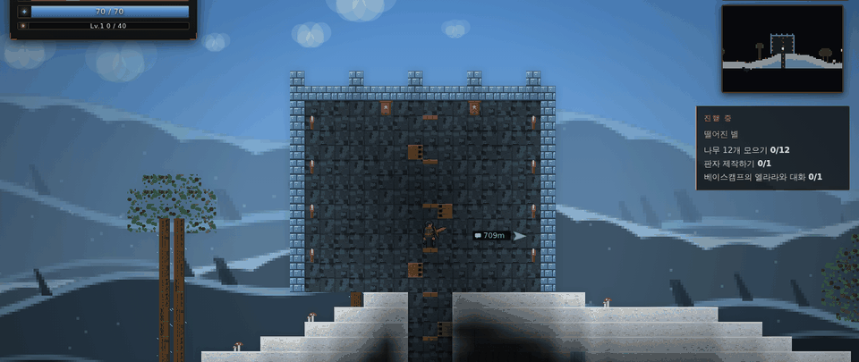
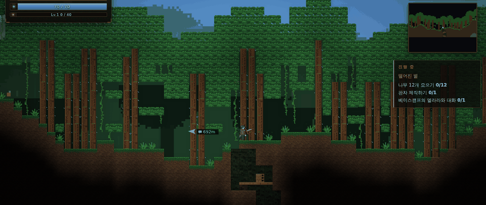
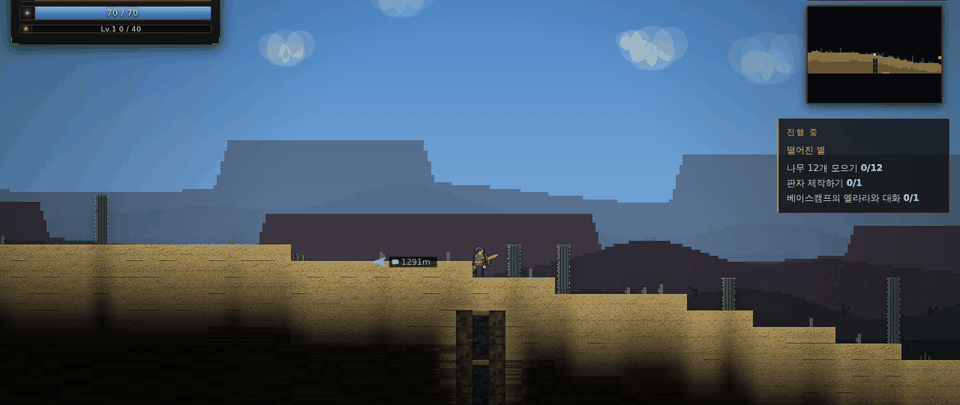
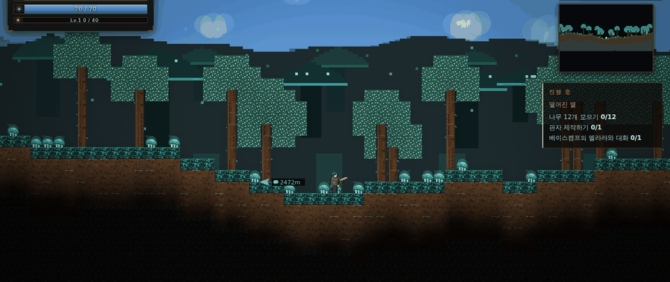
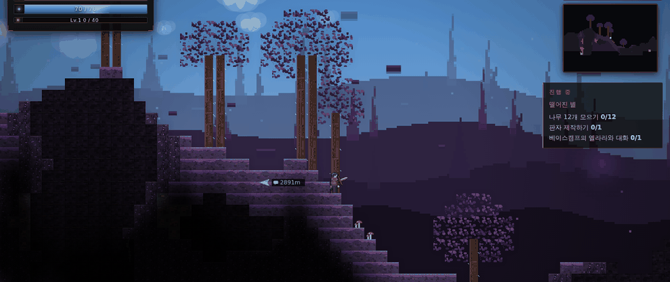
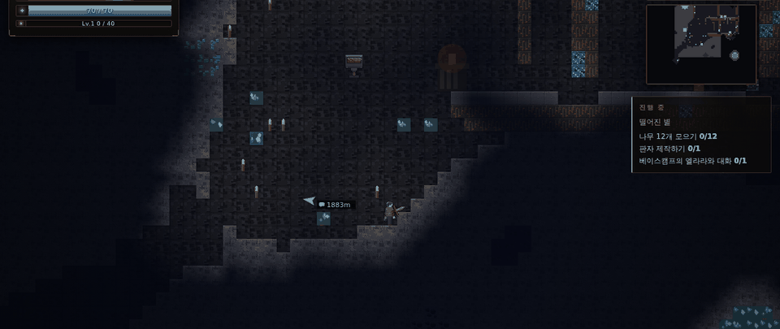

읽기 전에, 해 보세요
지금 이 페이지에서
아래 화면이 게임 전체입니다. 내려받은 것과 같은 판이고, 설치도 계정도 없습니다.
이 게임은 키보드로 조작합니다.
모바일에서는 플레이할 수 없습니다. PC에서 이 페이지를 다시 열어 주세요.
진행 상황은 이 브라우저 안에 저장됩니다 · 저장에 대해 자세히
실제 화면
이렇게 생겼습니다
손대지 않은 플레이 화면입니다. 한 세계를 끝에서 끝까지 걸으며 지역마다 한 장씩 찍었습니다.







무슨 일이 있었나
한밤중에 하늘이 갈라졌다. 떨어진 것은 돌이 아니었다 — 부딪히기 직전, 그것은 분명히 몸을 뒤틀어 피하려 했다.
그것은 다섯 갈래 빛으로 부서져 흩어졌고, 그중 한 조각이 당신의 오른손에 박혔다. 눈을 떴을 때 세계는 색을 잃어가고 있었다. 사람들은 그것을 잿빛이라 불렀다.
잿빛은 재가 아니다. 잠든 별 조각의 꿈이 주변 물질에게 "너는 무엇이었지?"를 잊게 만드는 것이다. 색이 빠지고, 형태가 흐려지고, 결국 아무것도 아닌 것이 된다.
흩어진 조각을 찾아 재우거나 깨우는 것 — 그것이 당신이 할 일이다.
그리고 그 일은 결국 손으로 하는 일이다. 땅을 파고, 쓸 것을 만들고, 길을 막는 것과 싸운다.
무엇을 하는 게임인가
파고, 짓고, 끝까지 간다
지형을 직접 깎아 길을 내고, 캔 재료로 장비를 만들고, 그 장비로 다음 지역을 엽니다. 여느 샌드박스와 갈리는 지점은 둘입니다 — 장마다 끝내야 할 목표가 있고, 손을 떼도 돌아가는 생산 라인을 직접 짭니다.
파낸 만큼 지어진다
지형을 깎고 블록을 놓습니다. 작업 시설은 원하는 곳에 설치했다가 다시 걷어낼 수 있습니다.
싸우는 방식을 고른다
근접 · 원거리 · 마법 세 갈래 중에서 키울 쪽을 정하고, 고른 것을 스킬 슬롯 네 칸(Q E R F)에 걸어 씁니다. 부화시킨 펫도 곁에서 함께 싸웁니다.
들어가면 길이 다르다
지역마다 숨은 던전이 있습니다. 함정과 상자가 깔린 방을 지나 안쪽 끝에 닿으면, 거기서만 만날 수 있는 것이 기다립니다.
먹을 것은 직접 댄다
밭을 갈아 작물을 기르고 물가에서 낚습니다. 거둔 것을 요리해 두면 던전을 돌지 않아도 보급이 끊기지 않습니다.
손을 떼도 돌아간다
전력을 대고 기계를 이어 붙여 생산 라인을 짭니다. 캐고, 나르고, 처리하고, 갈라 담는 일을 대신 시킬 수 있습니다.
돌아올 곳을 키운다
여명 마을은 당신이 하는 일에 따라 자랍니다. 집이 서고 사람이 늘고, 죽어도 잃지 않는 것을 맡겨 둘 곳이 생깁니다.
열한 곳
서로 다른 땅을 지난다
지역마다 지형도 날씨도 사는 것도 다릅니다. 어떤 땅에는 비 대신 눈이 내리고, 어떤 물 위는 밟고 건널 수 있습니다.
잿빛 숲
무엇을 향해 가는가
끝이 정해져 있는 샌드박스
자유롭게 파고 짓되, 갈 곳은 분명합니다. 장마다 목표가 주어지고 그것을 끝내야 다음 장이 열립니다.
지역마다 다른 적을 정해진 수만큼 정리해 길을 엽니다.
다음 장비에 필요한 재료를 캐고 모읍니다.
각 지역의 주인과 맞붙습니다. 아래에 전부 있습니다.
정해진 물건을 직접 만들어야 넘어갑니다.
특정 깊이까지 파고 내려갑니다.
세어 보면 이만큼입니다. 위 화면과 아래 목록이 이 숫자의 실물입니다.
일흔아홉 종
길에서 마주치는 것들
지역마다 다른 것이 나옵니다. 아래는 그중 스물두 종입니다.
열두 번의 결착
길을 막고 선 것들
각 지역의 끝에는 그 지역을 그렇게 만든 존재가 있습니다. 전부 세 번 모습을 바꾸고, 형태가 바뀔 때마다 통하던 자리가 죽는 자리가 됩니다.
여정
열다섯 개의 장
1부에 해당하는 여덟 장을 그대로 펼쳐 두었습니다. 종장부터는 결말이라 가렸습니다.